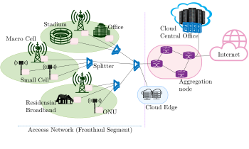

Thesis Title - Enhanced PON Architectures for Converged Access Networks for 5G and Beyond
Summary
In the past few years, the existing telecommunication networks are challenged to support the growing number of internet-reliant devices (such as smartphones and other smart devices), increasing penetration of mobile and residential broadband connectivity, and the escalating popularity of multimedia streaming applications. Besides, the need for supporting various emerging applications such as tactile internet, tele-medicine, telesurgery, \ac{ITS} and Machine Type Communication (MTC) calls unprecedented high data rate, ubiquitous availability, ultra-low latency, high reliability and network robustness. These multidimensional network requirements have created the drive for standardization of the telecommunication networks to \ac{5G}. Ultra-high wireless data rate, ultra-low latency and high reliability are identified as some of the key network requirements in \ac{5G} networks. \ac{Cloud-RAN} and progressive cell densification are currently being regarded as some of the most promising technology solution in 5G to support such network requirements. However, these technologies pose a ultra-high bandwidth and ultra-low latency requirements in the fronthaul transport access network which current transport access technologies cannot support cost-effectively. In this dissertation, we explore possible technological enhancements in the transport access technologies to support such requirements. The broad scope of this dissertation concerns cost-effective optical transport network design to support ultra-high bandwidth and stringent latency requirements in the converged access. As optical technologies for fronthaul transport in the access still remain as the most costly option due to its large scale of deployment, a reduction of cost in the optical access would have a multi-fold impact on the \ac{CapEx}. Therefore, this dissertation, focuses on \ac{PON} as the main contender for the fronthaul transport and addresses some of the key challenges, such as ultra-high bandwidth and ultra-low transport lateny.
We first address the ultra-high fronthaul transport bandwidth requirements in Cloud-RAN based next-generation converged access. We provide a solution to enable statistical multiplexing of cells for a fully centralized \ac{Cloud-RAN} (CPRI split) over shared fronthaul media. This is achieved by dynamically adjusting the cell bandwidth depending on the cell load with the help of a software defined network control. Using theoretical analysis and discrete event simulation, we show that this scheme enables statistical multiplexing while substantially reducing the blocking probability in a TDM-PON based shared fronthaul media.
Next, we address the stringent latency requirements of fronthaul transport in Cloud-RAN based next-generation converged access. For this, we propose a virtualized EAST-WEST PON architecture supporting direct communication between PON endpoints to enable ultra-low latency fronthaul transport for Cloud-RAN cells with functional split over \ac{MEC} enabled converged access. Using experimental feasibility demonstration and discrete event simulation, we prove that our EAST-WEST PON architecture can maintain the transport latency below a given threshold by dynamically offloading functional split computation across \ac{MEC} nodes using dynamic virtual PON slicing technique. This enables the convergence of mobile and \ac{MEC} nodes, delivering deterministic low-latency performance under highly dynamic traffic scenarios.
Although, the above virtualized EAST-WEST PON architecture with dynamic virtual PON slicing technique can address the stringent latency requirements in the converged access, the optimal formation of such virtualized PON slices to maintain low latency while maximizing the statistical multiplexing of Cloud-RAN cells is a challenging task. This motivated us to explore optimization techniques to form such optimal virtual PON slices over TWDM-PON based fronthaul transport network. Toward this, we proposed a mixed-analytical iterative optimization method that computes optimal virtual PON slice configuration. With theoretical analysis (based on queuing theory and discrete optimization) and discrete event simulation, we show that the proposed mix-analytical iterative optimization method can compute optimal virtual PON slices in timescales suitable for real-time or near-real time network optimization.
Finally, this dissertation concludes with the summary of the contributory works and providing some of the open issues and future research challenges that emerged while carrying out the technical contributory works in this dissertation.
